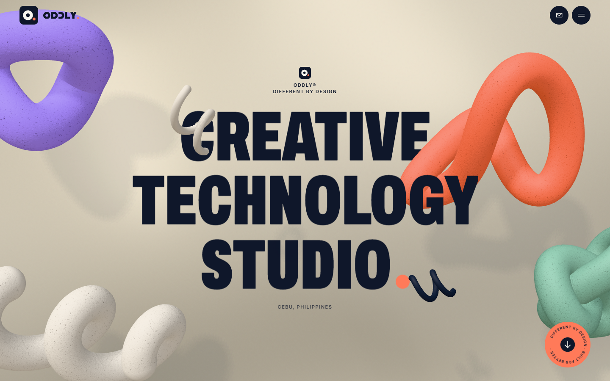
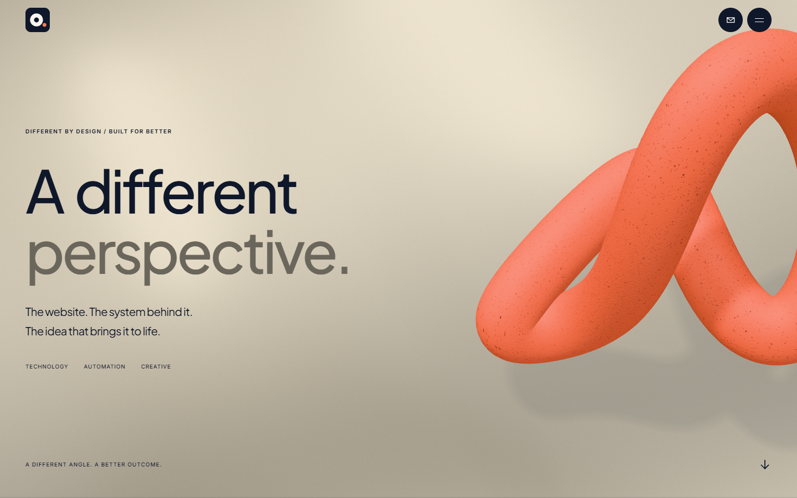
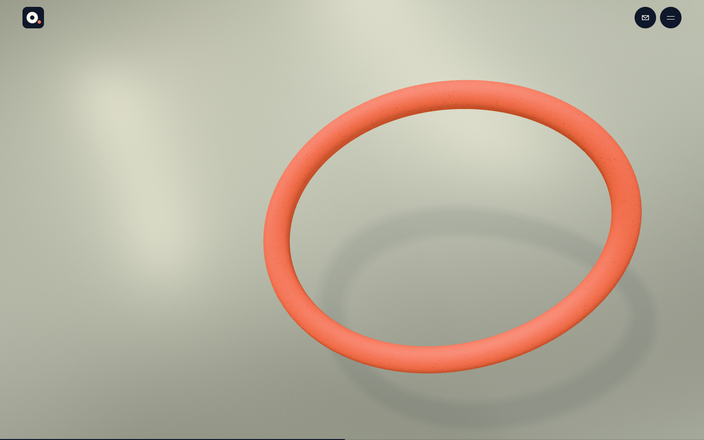
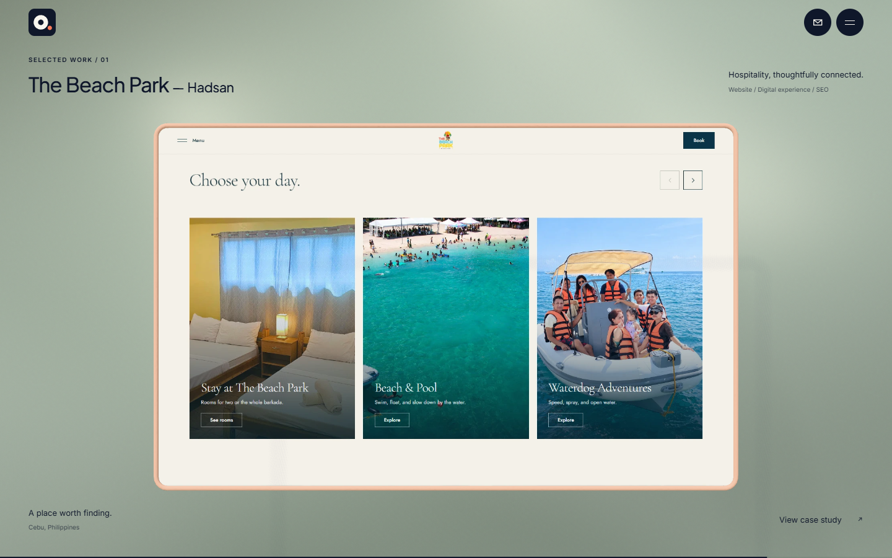
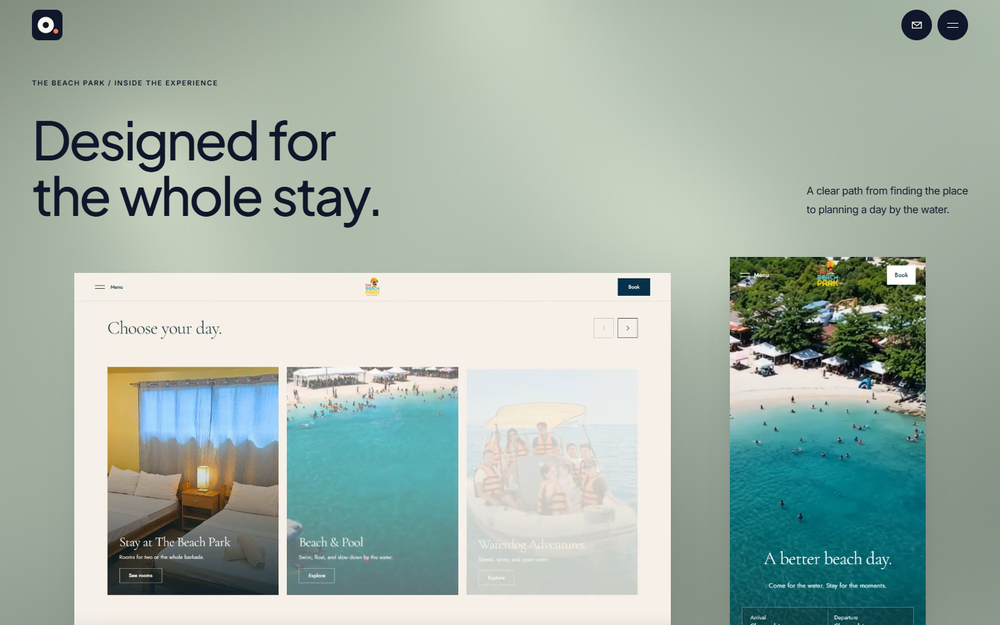

A different perspective
One form.
A new point of view.
A working opening sequence for review. The approved sculptures sit over a continuous, shaded 3D surface. The coral form opens into a lens, then becomes the frame for The Beach Park interface.
Watch the transition.
Actual browser recording. Includes reverse scrolling, the project reveal, and the website demonstration. The direction is being judged as a focused sequence before extending it further.
Mobile composition
The composition at rest.





Built for review
Background and movement.
The background is an actual subdivided surface with procedural displacement, smooth normals, moving light bands, grain, and fine-pointer lighting response. The sculpture uses two GPU morph targets: an open lens and the final rounded frame. HTML project media remains accessible above the decorative canvases.
Desktop movement follows normal document scroll through a short sticky stage. Touch and reduced motion use normal-flow compositions. Reduced motion keeps the background still and disables automatic video playback. A rendered image preserves the room when WebGL is unavailable.
Evidence and limits
A focused quality gate.
The Beach Park screenshots and website recording come from the studio-confirmed thebeachpark.vercel.app. No client work or outcomes have been invented.
This delivery focuses on the opening and first project. The remaining service and studio content is retained; its scene direction has not been extended as part of this study. These captures document the result and do not establish reference-site parity.